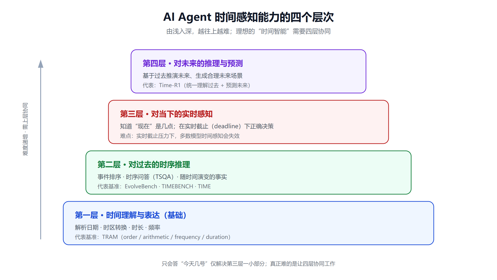
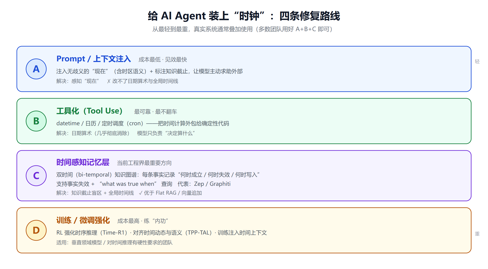

AI Agent 的"时间盲区"：为什么大模型不知道今天几号，以及如何让它拥有时间感知
问一个看似简单的问题："今天几号？"
把它抛给一个没有联网、没有工具的大模型，答案往往令人哭笑不得——它可能给出训练截止那年的某个日期，可能一本正经地编一个，也可能反问你。一个能写代码、能做多步规划、能调用几十个工具的"智能体"，却连自己活在哪一天都搞不清楚。
这不是某个模型的 bug，而是整类系统的结构性盲区。大模型是在离散文本 token 上训练出来的一张静态快照，它没有心跳、没有时钟、没有对连续时间的物理感知。而真实世界里，几乎所有有价值的 Agent 任务都带着时间刻度：日程要按点触发，事实会随时间失效，"最新款"三个月后就成了"上一代"。
本文想把"时间感知"这件事讲透：AI Agent 在时间上到底缺什么（四层缺陷）、为什么会缺（根因），以及工程上怎么补（四条路线）。
一、先厘清：什么是 Agent 的"时间感知能力"
"时间感知"不是一个单一能力，而是一组能力的集合。综合 TRAM、TIMEBENCH、TIME、Time-R1 等一系列评测基准，可以把它拆成四个层次，由浅入深：
-
第一层 · 时间理解与表达：能不能正确解析日期、时区、时长、频率？比如"2026 年 3 月的第三个周二是几号""从北京时间上午 9 点到纽约时间要过多久"。TRAM 基准把这层拆成了顺序（order）、算术（arithmetic）、频率（frequency）、时长（duration）等维度。
-
第二层 · 对过去的时序推理：能不能对已经发生的事件排序、做时序问答（TSQA）、处理"随时间演变的事实"？比如"某公司的 CEO 在 2023 年是谁，2025 年又换成了谁"。
-
第三层 · 对当下的实时感知：知不知道"现在"是什么时刻？能不能在有实时截止（deadline）的场景下做出正确决策？研究发现，一旦引入真实的实时截止压力，很多模型的时间感知会直接失效。
-
第四层 · 对未来的推理与预测：能不能基于过去推演未来、生成合理的未来场景？Time-R1 的研究强调，真正的"时间智能"应该把理解过去、预测未来、生成合理未来三件事统一起来，而不是割裂处理。
一个只会答"今天几号"的系统，只解决了第三层的一小部分。真正难的是让这四层能力协同起来。

二、四层缺陷：Agent 在时间上到底"瞎"在哪
缺陷一：知识截止（Knowledge Cutoff）——它只知道"过去的世界"
每个大模型都有一个训练数据截止时间，截止之后发生的一切它一无所知。更麻烦的是，Dated Data: Tracing Knowledge Cutoffs 这项研究（arXiv:2403.12958）发现，模型的实际有效截止时间往往比官方宣称的更早——因为语料里旧数据占比高，新事件的信号被稀释了。
截至 2026 年年中，主流前沿模型的知识截止大致是：GPT-5.5 约在 2025 年 12 月，Claude Fable 5 / Opus 4.8 的可靠知识大致到 2026 年 1 月（见 metehan.ai 的截止时间汇总）。也就是说，任何要求"最新信息"的任务，模型都必须借助外部检索，否则就是在用过时的记忆冒充现状。
有意思的是，反过来"用 Prompt 让模型假装忘掉某个时间点之后的知识"也很难做干净。Can Prompts Rewind Time for LLMs（arXiv:2510.02340）发现，直接问截止后的信息时 Prompt 约束有效，但当被遗忘的内容只是因果相关而非直接被问时，模型还是会"漏"出来。时间边界，堵住正面容易，堵住侧面很难。
缺陷二：不知道"现在"，而且"现在"本身有歧义
模型默认无法感知当前时刻，这个时间必须由外部注入到上下文里。几乎每个生产环境的 system prompt 都有一行 Today is {current_date}。
但问题比想象的深。The Five Definitions of 'Now' Inside Your LLM Prompt 这篇文章指出一个容易被忽略的陷阱：prompt 里的这个"现在"到底是谁的现在？它可能是服务器时间、用户所在时区的时间、请求发起的时间、数据快照的时间……这几个"now"在跨时区、异步、缓存的系统里根本不是同一个值。一旦混用，Agent 算出来的"三天后"就会莫名其妙偏掉一天。
时间感知的第一步，是先把"现在"定义清楚，而不是甩一个裸的日期字符串进去。
缺陷三：连日期算术都算不利索——根子在 Tokenization
这是最反直觉的一点：一个能解奥数题的模型，却常常算错两个日期之间差几天。
根因藏在分词（tokenization）层面。Date Fragments（arXiv:2505.16088） 和 Benchmarking Temporal Biases（arXiv:2412.13377） 都指出：分词器不是为表示数值设计的，它会把日期切成不规则的 subword 碎片。"2026-03-15"可能被切成毫无规律的几块，数值的连续性和大小关系在这一步就被破坏了。模型看到的不是一个"日期"，而是一串割裂的符号，自然算不准。
一项发在 PubMed 上的研究也强调：分词器会把连续的时间数值当成互相独立的 token 处理，忽略它们之间的时序关系。所以"日期算术差"不是推理能力问题，而是输入表示层的问题。
缺陷四：维持不住一条全局一致的时间线
短序列里，模型能记住"A 发生在 B 之前"。但一旦事件变多、跨度变长，它就撑不住了。Do LLMs Understand Chronology?（arXiv:2511.14214） 的结论很精准：随着序列变长，精确匹配率急剧下降，模型基本能保住局部顺序，却无法维持一条单一的、全局一致的时间线。
这对长周期 Agent 是致命的。一个连续运行几周、处理成百上千条事件的 Agent，如果记不住全局时间线，它对"事情按什么顺序发生的"理解就会逐渐错乱。
三、往里看一层：模型内部其实有"时间的影子"
缺陷说完，也要说句公道话——大模型并非对时间完全无感。
Where Language Models Recall Time-specific Information（arXiv:2502.14258） 通过电路分析发现了所谓的 "Temporal Heads"（时间注意力头）：模型里存在一批专门负责处理时间知识的注意力头，它们在多个模型中都存在，只是具体位置会变，且对不同类型知识、不同年份的响应也不同。
另一项研究 Do Language Models Know Time Passes?（arXiv:2506.05790） 更进一步：LLM 确实具备一定的"时间流逝感知"，能够在离散语言 token 和连续物理时间之间搭起一座桥——只不过这种能力随模型规模和推理能力的增强而变强。
结论是：时间感知不是"有或无"的开关，而是一个可以被度量、被增强的光谱。这也正是下面四条工程路线的意义所在。
四、四条修复路线：怎么给 Agent 装上"时钟"
从最轻到最重，依次是 Prompt 注入、工具化、时间感知记忆、训练强化。真实系统里，它们通常是叠加使用的。

路线 A：Prompt / 上下文注入（最轻，但要注入对）
最基础的做法，就是在 system prompt 里明确注入当前时间。但结合前面缺陷二的教训，注入时要做到：
- 写清语义，而非裸日期：不要只写
2026-09-01，而要写清楚它是哪个"现在"——例如"当前用户本地时间为 2026-09-01 周二，时区 UTC+8"。 - 标注知识截止：告诉模型它的训练截止时间，让它对"截止之后"的问题主动求助外部工具，而不是硬编。
- 不要指望 Prompt 能改变模型的算术能力：注入"今天几号"能解决"感知现在"，但解决不了"日期算术"和"全局时间线"——那些得靠工具和记忆层。
这条路线成本最低、见效最快，是所有 Agent 的标配起点，但它只是地基。
路线 B：工具化（最可靠——把时间计算外包给确定性代码）
核心原则：凡是能用确定性代码算准的时间，就别让模型去"心算"。
给 Agent 配上一组时间相关工具：
- datetime 工具：获取当前精确时间、做时区转换、计算日期差与时长——这些交给代码库（如 Python 的
datetime/zoneinfo）零误差。 - 日历工具：查询"下周三是几号""某月最后一个工作日"这类需要日历规则的问题。
- 定时/调度工具（cron）：让 Agent 能设置"每天早上 8 点执行""每周一提醒"的任务。
这条路线把缺陷三（日期算术）几乎彻底消除了：模型只负责"决定要算什么"，具体计算交给工具。这也是当前工程上最落地、最不容易翻车的做法。如果你在给 Agent 接工具，可以参考我们关于 MCP 与 A2A 两大 Agent 协议的深度对比——工具与时间能力的暴露方式，往往就走这些协议。
路线 C：时间感知记忆层（当前工程界最重要的方向）
这是解决缺陷一和缺陷四的关键，也是 2026 年 Agent 记忆领域最热的话题。
普通的 Flat RAG 或"向量库追加"式记忆有个根本缺陷：它只记录"这条事实存在过"，却不记录"这条事实何时成立、何时失效"。于是当你问"去年这个客户的合同状态是什么"，它可能把今年的状态翻出来给你——因为它没有时间维度。
双时间（bi-temporal）知识图谱正是为此而生。以开源框架 Zep / Graphiti 为代表（见 Zep 的架构论文 arXiv:2501.13956 与 Graphiti 的 GitHub 仓库），它的核心思路是：
- 每条事实都带时间戳：记录它"何时开始成立、何时失效"（有效时间），以及"何时被写入系统"（事务时间）——这就是"bi-temporal"（双时间）。
- 事实失效（fact invalidation）：当新信息与旧事实冲突时，不是覆盖删除，而是把旧事实标记为"到某时刻为止有效"，历史被完整保留。
- 支持 "what was true when" 查询：可以精确回答"在某个时间点，这件事的状态是什么"。
按照 Zep 官方对时间知识图谱的定义，这样的图谱表示的不只是"知道什么"，更是"知识如何随时间变化"。一篇 2026 年的时间感知记忆层盘点也直言：即便有了百万 token 的超长上下文，Flat RAG 和朴素向量追加系统在长周期上依然答不好"什么时候什么是真的"。
除了图谱，时间感知检索也很重要：检索时按 recency（新近度）和有效期加权，而不是只看语义相似度。Time-aware ReAct Agent for TKGQA（NAACL 2025） 就是在检索过程里加入时间约束的一个代表。想系统了解 Agent 记忆的技术选型，可以看我们的 AI Agent 记忆系统开源方案指南；检索侧的加权与混合策略则可参考 BM25 与 RAG 混合检索的规模化实践。
路线 D：训练 / 微调强化（最重，但能提升"内功"）
前三条都是"外挂"，最后一条是练内功——直接提升模型自身的时间推理能力：
- 用强化学习强化时序推理：Time-R1（arXiv:2505.13508） 提出了一条把理解过去、预测未来统一起来的、可扩展的训练路径，目标是走向"真正时间感知的 AI"。
- 对齐时间动态与语义：TPP-TAL（arXiv:2601.00845） 是一个即插即用框架，在把事件时间喂给 LLM 之前，先显式地把时间动态与上下文语义对齐，从而让模型更好地感知长程时间依赖。
- 训练时注入时间上下文：较早的一项研究（arXiv:2106.15110） 表明，训练时带上时间上下文能改善对历史事实的记忆与对未来的校准，并且模型可以随新数据"刷新"，无需从头重训。
这条路线成本最高，通常只有做垂直领域模型、或对时间推理有硬性要求的团队才会走。多数应用团队用好 A+B+C 三条已经足够。相关的微调工程可参考 LLM 微调框架横评。
五、前沿风向：从"被动应答"到"主动 + 长周期"
时间感知能力的终点，不只是"答对时间题"，而是让 Agent 具备主动性（proactivity）和长周期（long-horizon）运作的能力——它应该在恰当的时机主动做事，而不是干等着你发指令。
这个方向的研究正在快速推进：
- Timing-Aware Reinforcement Learning for Proactive Task Scheduling（arXiv:2605.24900） 研究让 Agent 自主预判用户需求、在合适的时刻触发软件动作，从"被动等指令"转向"主动抓时机"。
- Proactive Long-term Intent Maintenance（arXiv:2601.09382） 关注让 Agent 在动态环境里维持长期意图，而不是只活在当前这一轮对话里。
- Proactive Memory Agent（arXiv:2607.08716） 提出用一个独立的"记忆 Agent"与行动 Agent 并行运行，由它来决定何时该主动注入一条提醒、何时该保持沉默。
最落地的形态，就是定时 / 调度 Agent——如何构建一个按时自动运行的 AI Agent 描述的那种"每天早上、每小时、每周一自动跑，无需人工触发"的智能体。这类 Agent 把"时间感知"从一个被动的理解能力，变成了主动的行动触发器。要把这类长期运行的 Agent 部署稳，还得配上可观测性，这一点可参考 Langfuse 的 LLM/Agent 可观测性指南。
小结
AI Agent 的"时间盲区"不是某个模型的缺陷，而是这类系统的天生属性：它是静态文本快照，没有时钟、没有连续时间感、日期在分词阶段就被切碎、长时间线维持不住。
但盲区可以被系统地补上，路线也很清晰：
- Prompt 注入解决"感知现在"（记得写清是哪个"现在"）；
- 工具化解决"算准时间"（把计算外包给确定性代码）；
- 双时间记忆图谱解决"记住事实何时变化"（Zep/Graphiti 式的 bi-temporal 建模是当前最优解）；
- 训练强化提升模型自身的时间推理内功（Time-R1 等，重投入场景才需要）。
对绝大多数团队来说，把前三条叠起来用，就能让 Agent 从"不知道今天几号"进化到"知道什么时候什么是真的、该在什么时候做什么"。而随着主动性和长周期研究的成熟，下一代 Agent 会越来越像一个真正活在时间里的助手，而不是一张凝固在训练截止那天的旧照片。
免责声明
本文所涉技术方案、评测基准与产品信息均来自公开资料整理，用于技术交流与参考，不构成任何投资、采购或工程决策建议。各模型的知识截止时间、框架能力会随版本更新变化，请以官方最新文档为准。文中引用的研究结论仅代表对应论文在其实验设定下的发现，实际效果因场景而异。
参考来源
- Dated Data: Tracing Knowledge Cutoffs in Large Language Models（arXiv:2403.12958）
- LLM Knowledge Cutoff Dates（metehan.ai）
- Can Prompts Rewind Time for LLMs?（arXiv:2510.02340）
- The Five Definitions of 'Now' Inside Your LLM Prompt（tianpan.co）
- Date Fragments: A Hidden Bottleneck of Tokenization for Temporal Reasoning（arXiv:2505.16088）
- Benchmarking Temporal Biases in Large Language Models（arXiv:2412.13377）
- Pitfalls of representing and tokenizing temporal data for LLMs（PubMed）
- Do Large Language Models Understand Chronology?（arXiv:2511.14214）
- Where Language Models Recall Time-specific Information / Temporal Heads（arXiv:2502.14258）
- Discrete Minds in a Continuous World: Do Language Models Know Time Passes?（arXiv:2506.05790）
- TRAM: Benchmarking Temporal Reasoning for LLMs（arXiv:2310.00835）
- TIME: A Multi-level Benchmark for Temporal Reasoning（arXiv:2505.12891）
- Time-R1: Towards Comprehensive Temporal Reasoning in LLMs（arXiv:2505.13508）
- EvolveBench: Assessing Temporal Awareness in LLMs on Evolving Knowledge（ACL 2025）
- Real-Time Deadlines Reveal Temporal Awareness Failures（arXiv:2601.13206）
- Zep: A Temporal Knowledge Graph Architecture for Agent Memory（arXiv:2501.13956）
- What Is a Temporal Knowledge Graph?（getzep.com）
- Graphiti: 开源时间知识图谱框架（GitHub）
- 5 Best Time-Aware Memory Layers for Long-Term AI Agents（Medium, 2026）
- Time-aware ReAct Agent for Temporal Knowledge Graph QA（NAACL 2025）
- Enhancing Temporal Awareness in LLMs for Temporal Point Processes / TPP-TAL（arXiv:2601.00845）
- Time-Aware Language Models as Temporal Knowledge Bases（arXiv:2106.15110）
- Timing-Aware RL for Proactive Task Scheduling Agents（arXiv:2605.24900）
- Proactive Long-term Intent Maintenance in Dynamic Environments（arXiv:2601.09382）
- Proactive Memory Agent for Long-Horizon Agents（arXiv:2607.08716）
- How to Build a Scheduled AI Agent（pickaxe.co）
相关阅读
- AI Agent 记忆系统开源方案指南（2026）
- MCP vs A2A：两大 AI Agent 协议深度对比
- 从 LLM 到 Agent：对话已死的范式转移
- 企业 AI Agent 部署实战指南（2026）
- Langfuse：LLM/Agent 可观测性指南
- BM25 与 RAG 混合检索的规模化实践
推荐搭配装备
善其事，利其器。以下硬件能最大化你的AI体验👇
🔗 通过以上链接购买可支持本站持续运营 🙏